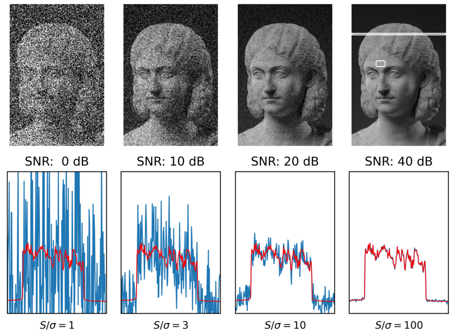

Artisan Technology LLC
Custom software + hardware
Chicago, IL
41.88° N — 87.63° W
custom solution
Artisan Technology
Idea » Prototype » Production
Scroll ↓
01 — the practice
Artisan Technology LLC designs and builds custom software and hardware to solve problems that don't fit off-the-shelf solutions.

02 — principal engineer
Lindsay Moore
I'm a Design Thinker with 10+ years of experience. Really, I'm someone who's spent a decade asking what if we did it this way?
and then building it.
I design systems, build things that matter, and bring a maker's mindset to every problem.
03 — the full arc
I like interesting questions and the full arc.
idea
prototype
production
Idea
Prototype
Production

The best engineering is equal parts RIGOR and imagination.
If we can dream it, we can build it.
04 — background

- Education
- Master's in Computer ScienceUniversity of Chicago
- Bachelor's in Production & BusinessMcNally Smith College
- Board
- Pumping Station: OneChicago's oldest and largest hackerspace
- Research
- STAGE CenterA multidisciplinary technology and arts lab at UChicago
- Chicago Virtual ProductionAn independent virtual production group